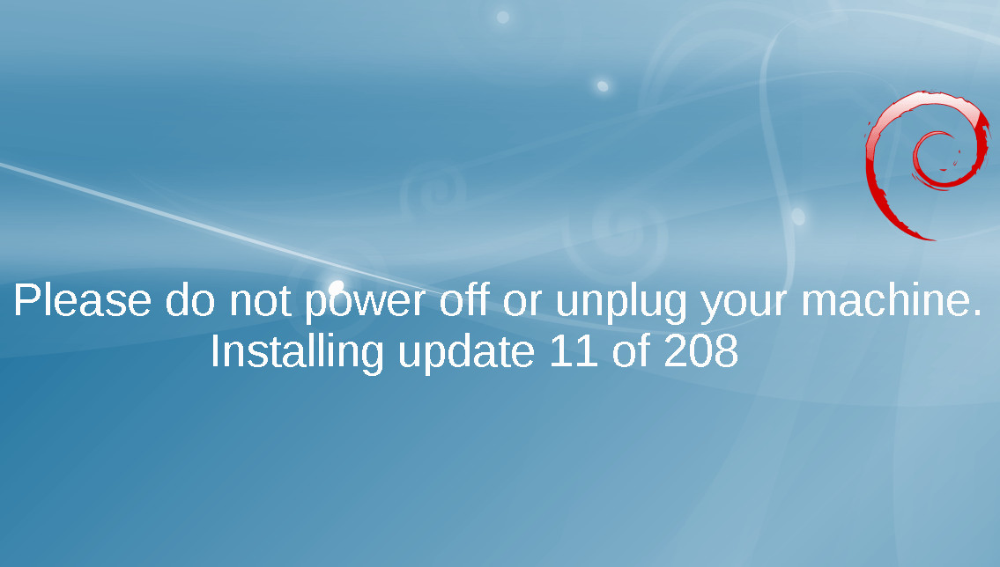

Автоматизация обновлений debian
08/21/18 Узнал пару "фишек" администрирования серверов, спешу поделиться.
На самом деле, автоматизацией обновления, в стиле Microsoft, мы, конечно, заниматься не будем. Иначе, рискуем прийти к схожим результатам: обновили систему в автомате ночью, а там что-то не запустилось, и кто-нибудь вынужден остаться без здорового крепкого сна.
Вместо этого, мы настроим:
- скачивание пакетов обновлений ночью
- уведомление на email об их появлении
- автоматическую очистку кеша, после успешной установки
- дополнительно: централизированный кеш
cron-apt
Этот пакет debian позволяет довольно удобно управлять ночным заданием обновления системы. Хотя, как я уже сказал, выполнять dist-upgrade с помощью него всё-таки не рекомендуется, мы можем настроить обновление списка пакетов, скачивание архивов на локальный диск, и уведомление, на email о том, что пора обновляться.
~# apt-get install cron-apt
Если дружны с английским можно почитать README, он достаточно подробный
~$ zless /usr/share/doc/cron-apt/README.gz
По умолчанию, пакет уже настроен на оптимальное использование: обновляет список пакетов и скачивает их на диск. Давайте настроим уведомления на email и выставим время обновления пакетов.
Получается примерно такой конфиг
# Отправлять email если есть новые пакеты для установки (по-умолчанию: "error")
MAILON="upgrade"
# Писать в лог всегда (по-умолчанию: "upgrade")
SYSLOGON="always"
# Отправлять письма по этому адресу (по-умолчанию: локальному пользователю root)
MAILTO="smart-admin@company.ru"
Для выполнения строчки MAILTO надо дополнительно настроить почтовый агент: exim4 или postfix. Это выходит за рамки данной статьи, но я совсем недавно писал про postfix: Локальный почтовый релей средствами postfix, a exim4 довольно легко гуглится.
Время выполнения можно задать в файле для cron'а /etc/cron.d/cron-apt, по-умолчанию: каждый день в 4 ночи.
apt-cacher-ng
А это ещё один прикольный пакет: кеширующий прокси для менеджера пакетов apt. Его очень удобно использовать в случае, если Вы админите несколько серверов, расположенных близко друг к другу.
Выделяем один из серверов, в качестве хранилища кеша
~# apt-get install apt-cacher-ng
По-умолчанию прокси биндится на все интерфейсы, так что, если ваш сервер светится и на внешку тоже, укажите серый IP в конфиг-файле /etc/apt-cacher-ng/acng.conf
BindAddress: 192.168.23.57
Настраиваем apt на всех серверах
Для этого, надо добавить строку Acquire::http::Proxy "http://192.168.23.57:3142"; в конфиг apt'а
~# echo 'Acquire::http::Proxy "http://192.168.23.57:3142";' > /etc/apt/apt.conf.d/02Proxy
И надо обязательно убедиться, что все репозитории указаны с протоколом http. ftp будет идти напрямую, а https просто не будет работать.
Для репозиториев которые только доступны только по https протоколу, надо заменить https:// на http://HTTPS///, чтобы прокся работала. Плюс - отпадает надобность в пакете apt-transport-https.
Результат
Тестил обновлением со jessie до stretch (debian 8 -> debian 9), получил существенное повышение скорости скачивания пакетов:
~# # До настройки
~# apt-get dist-upgrade -d -y
.......
Fetched 485 MB in 5min 47s (1,396 kB/s)
~# # После
~# apt-get dist-upgrade -d -y
.......
Fetched 485 MB in 20s (23.3 MB/s)
Да и сеть в таком случае меньше нагружаем..
Забываем про apt-get clean
А чтобы в папке /var/cache/apt/archives не копились пакеты, съедая драгоценное место, можно сказать apt'у всегда удалять их после установки.
~# echo 'DPkg::Post-Invoke {"/bin/rm -f /var/cache/apt/archives/*.deb || true";};' > /etc/apt/apt.conf.d/03Clean